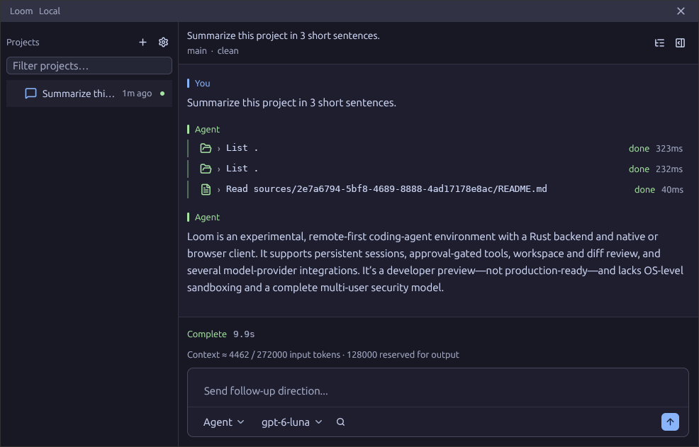

Open source. In active development.
Coding agents,
in your workspace.
Run agents against your repositories. Follow their work, step in when needed, and review what changed.
A native app and browser client, connected to a Rust backend you run locally or remotely.
Explore a simulated session. No model provider needed.

Clients and backend
One GPUI interface.
Desktop and browser.
Loom uses GPUI for its native app and its WebAssembly browser client. Both connect to a Rust backend that manages sessions, tools, and workspace state.
The native app includes a local worker. The browser connects to a separately running backend. Either client can connect to a remote backend.
Explore the projectRun locally or on your own infrastructure.
Try it. Build with it.
A work in progress.
Open for you to shape.
Loom is an experimental developer preview. Try the demo, run it from source, or help improve what comes next.